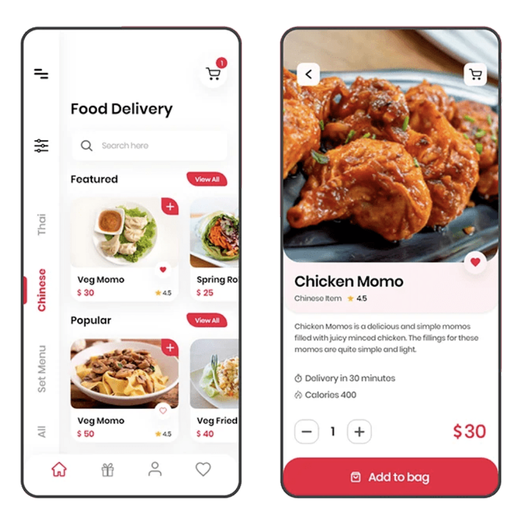

Tutorial Completo: Introducción al Diseño de UI
Aprende los fundamentos del diseño de interfaces de usuario, principios de usabilidad y casos prácticos de empresas modernas.

Aprende los fundamentos del diseño de interfaces de usuario, principios de usabilidad y casos prácticos de empresas modernas.
El diseño de interfaces de usuario (UI) se refiere a la creación de la parte visual e interactiva de un producto digital, como aplicaciones móviles, sitios web o software. La UI es todo lo que el usuario ve y con lo que interactúa: botones, iconos, menús, tipografía, colores y otros elementos gráficos.
El objetivo principal del diseño de UI es hacer que la interacción con un producto sea intuitiva, atractiva y funcional. Una buena UI no solo debe ser visualmente agradable, sino también facilitar que el usuario logre sus objetivos de manera eficiente.
Imagina que usas una aplicación para pedir comida. La UI incluye:
Si estos elementos son fáciles de encontrar y usar, la UI está bien diseñada.
Aunque los términos CX (Experiencia del Cliente), UX (Experiencia de Usuario) y UI (Interfaz de Usuario) están relacionados, cada uno tiene un enfoque distinto. A continuación, te explicamos las diferencias de forma sencilla:
| Concepto | Definición | Enfoque | Ejemplo |
|---|---|---|---|
| CX | Abarca todas las interacciones que una persona tiene con una marca. | Satisfacción general del cliente con la marca. | Facilidad para encontrar un producto, proceso de pago, envío, atención al cliente. |
| UX | Se centra en cómo se siente una persona al usar un producto digital o físico. | Garantizar que el producto sea fácil de usar, eficiente y agradable. | Proceso de selección de comida rápido y sin frustraciones. |
| UI | Es la capa visual e interactiva de un producto digital. | Crear elementos visuales atractivos y funcionales. | Botones coloridos, diseño del carrito de compras, disposición de menús. |
Imagina que un producto digital es una casa:
Una interfaz de usuario efectiva debe cumplir con ciertas características para garantizar una experiencia agradable y funcional. A continuación, exploramos las más importantes:
Los elementos interactivos son aquellos con los que el usuario puede interactuar, como botones, enlaces, campos de texto, deslizadores o menús desplegables.
Ejemplo: En un formulario, un botón de “Enviar” debe ser grande, con un color contrastante y un mensaje que indique “Enviado” tras hacer clic.
La consistencia significa que los elementos de la interfaz mantienen el mismo estilo, comportamiento y ubicación en todo el producto.
Ejemplo: Si un ícono de “carrito” está en la esquina superior derecha en una página, debe estar en el mismo lugar en todas las páginas.
Una buena UI permite a los usuarios moverse por el producto sin confusión. La navegación debe be intuitiva y lógica.
Ejemplo: En un sitio web, un menú superior con categorías como “Inicio”, “Productos” y “Contacto” facilita la navegación.
El diseño de UI se basa en principios fundamentales que ayudan a crear interfaces visualmente atractivas y funcionales. Muchos de estos principios provienen de la psicología de Gestalt.
Los elementos relacionados deben estar cerca unos de otros para que los usuarios los perciban como un grupo.
Ejemplo: En un formulario, el campo de “Nombre” y su etiqueta deben estar juntos, separados de otros campos.
El espaciado (o “espacio en blanco”) es el área vacía entre elementos. Incluye márgenes, rellenos y espacios entre líneas.
Ejemplo: Dejar espacio entre un título y un párrafo hace que el texto sea más fácil de leer.
La alineación consiste en colocar los elementos de manera ordenada, siguiendo una cuadrícula o líneas imaginarias.
Ejemplo: En un formulario, alinear todos los campos de texto a la izquierda da una apariencia limpia.
El contraste es la diferencia entre dos elementos, como colores, tamaños o formas, para destacarlos.
Ejemplo: Un botón rojo sobre un fondo blanco es fácil de ver y atrae la atención.
La jerarquía visual organiza los elementos según su importancia, usando tamaño, color, posición y contraste.
Ejemplo: Un título grande en negrita es más importante que un texto pequeño en gris.
La repetición consiste en usar los mismos estilos, colores o patrones en toda la interfaz para crear coherencia.
Ejemplo: Usar el mismo color azul para todos los enlaces en un sitio web.
La psicología de Gestalt nos enseña cómo los humanos percibimos patrones. Algunos principios relevantes para UI incluyen:
Para ilustrar cómo se aplican los principios de diseño de UI, veamos ejemplos de empresas modernas con sitios web responsivos:

Airbnb utiliza un diseño responsivo que ajusta imágenes y texto para diferentes dispositivos. Su navegación es clara, con un menú hamburguesa en móviles y un diseño de cuadrícula fluida que reorganiza contenido según el tamaño de pantalla.

The Guardian usa un patrón de tarjeta UI para priorizar historias, ajustando de una columna en móviles a cuatro en escritorio. Su menú hamburguesa en móviles optimiza el espacio.
GitHub simplifica la navegación en móviles con un menú hamburguesa y prioriza el formulario de registro en escritorio, adaptándose a los objetivos del usuario.
FamousBirthdays.com rediseñó su sitio para ser responsivo, usando media queries para adaptar el diseño según la resolución. Esto redujo la tasa de rebote en un 10% y aumentó las páginas vistas por visita en un 15% en dispositivos móviles.
Para poner en práctica lo aprendido, diseña una interfaz sencilla para una aplicación de notas. Sigue estos pasos:
Puedes usar una hoja de papel o una herramienta digital para crear un prototipo.
El diseño de UI es un componente esencial para crear productos digitales que sean funcionales y atractivos. Al entender los conceptos básicos, las diferencias con CX y UX, las características de una UI efectiva y los principios fundamentales del diseño, estarás preparado para crear interfaces que mejoren la experiencia del usuario. Practica, experimenta y mantente actualizado con las mejores prácticas para perfeccionar tus habilidades.